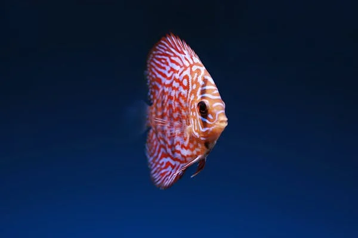
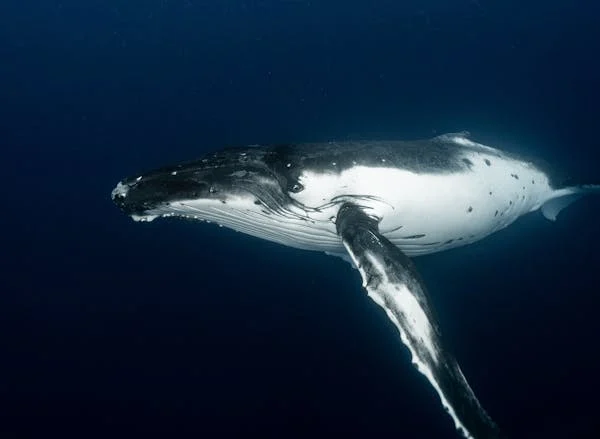
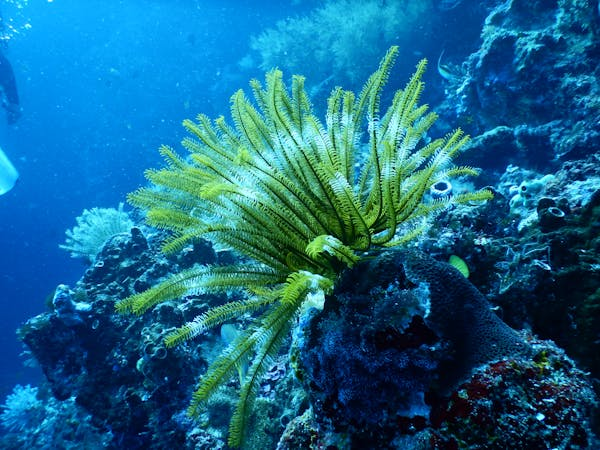
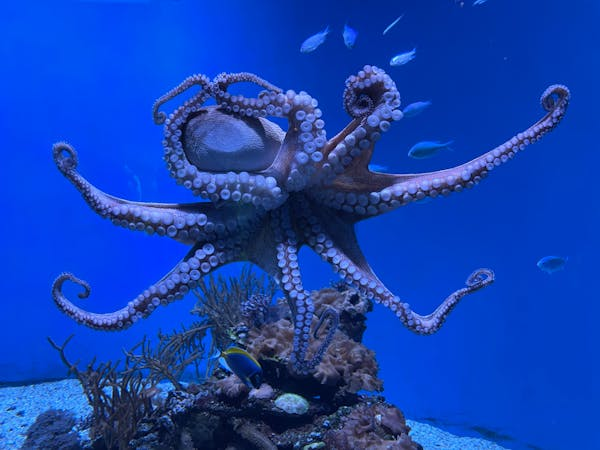
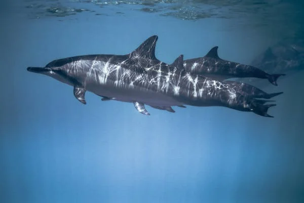
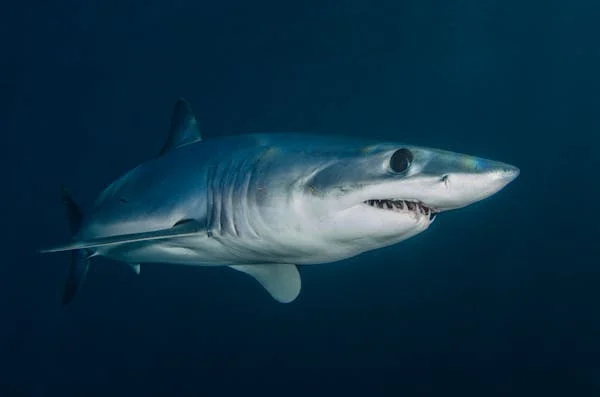

Fish are a fascinating and diverse group!
Found in both fresh and saltwater, they come in all shapes, colors,
and sizes. From tiny reef fish to powerful ocean predators, each
species has unique features and behaviors.
In this section, we’ll explore some of the most interesting types
of fish and uncover their secrets!
| Image | Description | Habitat | Diet | Behavior |
|---|---|---|---|---|
|  | Colorful fish that thrive in coral reefs. They use vibrant colors and patterns for camouflage and communication. | Coastal (Coral Reefs) | Mixed (plants & animals) | Peaceful |
|  | The largest animal ever known to have lived on Earth. Blue whales feed mainly on krill and live in deep oceans. | Deep Ocean | Plankton (krill) | Gentle and calm |
|  | Coral reefs are living structures that support thousands of marine species. They play a vital role in marine biodiversity. | Shallow Waters | Light & Plankton | Stationary/Passive |
|  | Highly intelligent marine animals known for their ability to camouflage, escape predators, and solve puzzles. | Ocean Floor / Caves | Carnivore (crustaceans, fish) | Shy, Solitary |
|  | Dolphins are social, intelligent mammals known for playful behavior and advanced communication skills. | Marine (Coastal/Ocean) | Mixed (Fish, Squid) | Social, Friendly |
|  | Sharks are ancient predators with powerful jaws and sharp teeth. They play a key role in balancing marine ecosystems. | Deep Ocean | Carnivore (fish, mammals) | Aggressive, Solitary |